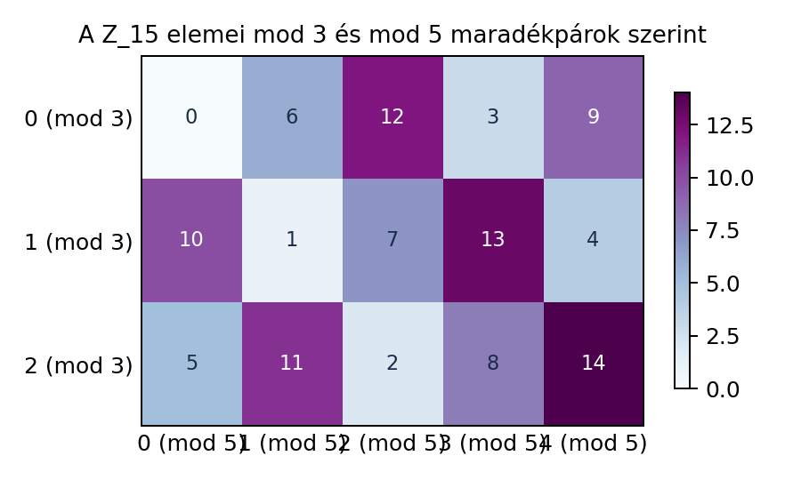

Tegyük fel, hogy egy nagy, mondjuk több száz jegyű egész számmal kell
műveleteket végeznünk, de a feldolgozó rendszer csak kisebb, például 16
vagy 32 bites szavakban tud hatékonyan számolni. Ugyanez a helyzet az
RSA-nál is: az
modulus tipikusan 2048 vagy 3072 bites, a kitevő pedig hasonló méretű.
Ha a moduláris hatványozást közvetlenül ekkora számokkal végezzük, az
lassú és memóriaigényes. A kínai maradéktétel (Chinese remainder
theorem, CRT) lehetővé teszi, hogy egy nagy modulus szerinti számítást
több, kisebb, páronként relatív prím modulus szerinti számításra
bontsunk, majd az eredményt egyértelműen rekonstruáljuk. Ez az ötlet
nemcsak a hatékony implementációban, hanem a diszkrét logaritmus
bizonyos támadásaiban és a hibainjektálásos támadásokban is
kulcsszerepet játszik.
4.2.2 Szemléletes kép
Tekintsük a
gyűrűt. A CRT szerint minden
egyértelműen megfelel egy
párnak, mert
.
Például
esetén
és
.
Az alábbi táblázat a teljes
-öt
mutatja.

A Z_15 elemei mod 3 és mod 5 maradékpárok
szerint - Szemléltető táblázat: minden cellában az a 0 és 14 közötti x
szerepel, amelyre x mod 3 a sor, x mod 5 pedig az oszlop. Minden x
pontosan egy cellába kerül.
A táblázatból például leolvasható, hogy a
párhoz
tartozik, mert a második sorban (mod 3 = 1) és a harmadik oszlopban (mod
5 = 2) a
áll. Ez a hozzárendelés kölcsönösen egyértelmű: ha ismerjük az
maradékait
-mal
és
-tel
osztva, akkor
mod
egyértelműen meghatározott.
4.2.3 A kínai maradéktétel
Definíció.Szimultán kongruenciarendszer
alatt olyan feltételeket értünk, ahol egy ismeretlen
egész számra egyszerre követelünk meg
adott
és pozitív
modulusok mellett.
Tétel. (Kínai maradéktétel, CRT.) Legyenek
páronként relatív prím pozitív egészek, azaz
minden
esetén. Legyen
.
Ekkor bármely
egészekre a
rendszernek pontosan egy megoldása van
modulo
,
tehát a megoldás
-ben
egyértelmű.
Bizonyítás. A bizonyítást konstruktívan végezzük,
így egyszerre kapjuk meg a megoldóképletet. Jelölje
Mivel
,
létezik
inverze modulo
;
jelölje ezt
,
azaz
Definiáljuk
Azt állítjuk, hogy ez az
kielégíti a kongruenciarendszert. Rögzítsünk egy
indexet. Ha
,
akkor
osztható
-vel,
így
.
Ha
,
akkor
,
ezért
.
Összegezve minden
-re:
Tehát a megadott
megoldás.
Az egyértelműséghez tegyük fel, hogy
és
is megoldás. Ekkor
osztható minden
-vel.
Mivel az
modulusok páronként relatív prímek, a szorzatukkal is osztható, azaz
.
Így
.
Ezért
-ben
valóban legfeljebb egy megoldás van; a létezést már láttuk. ∎
Példa 1. Oldjuk meg az
rendszert. A modulusok
páronként relatív prímek,
.
A tétel jelöléseivel: -
,
így
.
Mivel
és
,
.
-
,
.
Mivel
,
.
-
,
.
Mivel
,
.
Ebből
Mivel
,
a megoldás
mod
.
Ellenőrzés:
Példa 2. Oldjuk meg a két modulusos rendszert:
Itt
,
,
.
A
inverz:
,
és
,
tehát
.
Az
inverz:
,
tehát
.
Így
Mivel
,
a megoldás
.
Ellenőrzés:
és
.
4.2.5 A Garner-algoritmus
A standard CRT-képlet nagy
és
szorzatokat használ, ezért a köztes értékek az
méretűek lehetnek. A Garner-algoritmus ehelyett vegyes radix
alakban rekonstruál, és minden lépésben csak az aktuális kis modulussal
dolgozik.
Tegyük fel, hogy a modulusok
páronként relatív prímek, és az
megoldást keressük. A Garner-algoritmus a megoldást
alakban állítja elő, ahol minden
értéket a
intervallumból választunk. Az eljárás:
Algoritmus. (Garner-rekonstrukció.) 1. Legyen
és
.
2. Minden
esetén: 1.
.
2. Számítsuk ki
értékét. 3. Legyen
.
4. Frissítsük:
.
3. Eredmény:
.
A
érték az
-edik
lépés után már kielégíti az első
kongruenciát, ezért az algoritmus helyessége indukcióval igazolható.
Példa a Garner-algoritmusra. Ugyanarra a rendszerre:
.
- Kezdetben
,
.
-
:
;
,
mert
.
Ekkor
,
így
.
-
:
;
,
mert
.
Ekkor
,
így
.
Tehát a megoldás ismét
mod
.
A Garner-algoritmus előnye, hogy a
és a
értékek sem nőnek nagyobbra, mint az
modulus, és a köztes műveletek a kis
modulusok szerint végezhetők.
4.2.6 A gyűrűizomorfizmus
A CRT lényegében egy gyűrű-izomorfizmust ad. Legyenek
páronként relatív prímek és
.
Definiáljuk a
leképezést a
formulával. A CRT szerint
bijektív: minden komponenssorhoz pontosan egy
tartozik. Továbbá
művelettartó, mert
ahol a jobb oldalon a műveleteket
komponensenként mod
végezzük. Ezért
gyűrűizomorfizmus. Különösen fontos az
az eset, amikor
két különböző prím szorzata: ekkor
Ez az izomorfizmus alapozza meg az RSA
visszafejtésének CRT-gyorsítását, és lehetővé teszi, hogy inverzet,
szorzást vagy hatványozást komponensenként végezzünk el.
4.2.7 Alkalmazás: nagy számok
maradékrendszerben
Ha sok műveletet kell végeznünk modulo
,
akkor a CRT-vel úgynevezett maradékrendszerben (residue number
system, RNS) is dolgozhatunk. Kiválasztunk páronként relatív prím
modulusokat, amelyek szorzata
.
A bemenő számokat áttranszformáljuk a maradékvektorukra:
.
Összeadás és szorzás komponensenként végezhető, így a nagy modulus
szerinti műveletet kisebb, gyorsabb műveletekre cseréljük. Az eredményt
a végén CRT-vel rekonstruáljuk. Ez a technika hardveres
implementációkban, jelfeldolgozó áramkörökben és egyes kriptográfiai
gyorsítókban is megjelenik.
4.2.8 Python-illusztráció:
crt()
A következő oktatási implementáció a standard CRT-képletet használja.
A pow(Ni, -1, n) kifejezés Python 3.8-tól kezdve a
moduláris inverzet adja vissza (régebbi verzióban a kiterjesztett
euklideszi algoritmus kell).
# OKTATÁSI CÉLRA – NEM ÉLES HASZNÁLATRAdef crt(residues, moduli):"""Kínai maradéktétel: x ≡ residues[i] (mod moduli[i]). Feltétel: a modulusok páronként relatív prímek.""" N =1for m in moduli: N *= m x =0for a, n inzip(residues, moduli): Ni = N // n Mi =pow(Ni, -1, n) # Ni inverze modulo n x = (x + a * Ni * Mi) % Nreturn x# Példa: x ≡ 2 (mod 3), x ≡ 3 (mod 5), x ≡ 2 (mod 7)x = crt([2, 3, 2], [3, 5, 7])print(x)print([x % m for m in (3, 5, 7)])
Várt kimenet:
23
[2, 3, 2]
Az első sor a rekonstruált
érték, a második sor pedig ellenőrzi, hogy a maradékok valóban
megegyeznek a bemeneti
értékekkel. Éles kriptográfiai alkalmazásokban a bemeneteket és a
modulusok relatív prím voltát mindig ellenőrizni kell.
4.2.9 Valós életbeli alkalmazás:
RSA-visszafejtés CRT-vel négyszer gyorsabban
Az egyik legismertebb CRT-alkalmazás az RSA visszafejtés és aláírás
gyorsítása. Legyen
,
ahol
és
nagy prímek. A nyilvános kitevő
,
a titkos kitevő
teljesíti
,
ahol
.
Egy
rejtett szöveget az
képlettel fejtenénk vissza. Közvetlenül ez egy
bites modulussal és
bites kitevővel végzett moduláris hatványozás, amelynek költsége
hozzávetőleg
bitművelet.
A CRT segítségével a visszafejtést a következőképpen végezzük.
Számítsuk ki a modulus szerinti kitevőket:
majd a részeredményeket:
Ezek után a
modulo
vett inverzét
()
használva:
végül a rekonstruált szöveg:
Ez a Garner-algoritmus két modulusos
esete, és ismét a CRT-t alkalmazza: az
érték mod
éppen
,
mod
pedig
,
így az
modulus szerint egyértelmű.
Az alábbi ábra ezt az adatutat a 4. feladat kis számain
(,
,
,
)
követi végig.
Statikus változat (mint a PDF-ben)
RSA-visszafejtés CRT-vel: két fél méretű hatványozás és
Garner-rekonstrukció
(,
,
,
).
A két ág költsége egyenként
,
a szaggatott közvetlen útté
;
egyetlen hibás részeredmény a modulus egyik prímtényezőjét árulja
el.
Miért négyszer gyorsabb? A moduláris hatványozás költsége a
bitméretekben nagyjából köbösen növekszik. Ha
hossza
bit, akkor
és
hossza körülbelül
bit. Két darab
bites hatványozás költsége:
szemben a közvetlen
bites hatványozás
költségével. Ezért a gyorsulás körülbelül négyszeres. A gyakorlati
RSA-implementációk, például az OpenSSL, a cryptography
könyvtár vagy a hardveres biztonsági modulok, éppen ezt a CRT-alapú
gyorsítást használják.
Figyelmeztetés: a CRT-alapú RSA-számítás érzékeny a hibainjektálásos
támadásokra. Ha a
vagy
kiszámítása során hiba történik, a hibás
eredményből a támadó bizonyos feltételek mellett faktorizálhatja
-et.
Ezt a Hibainjektálás: a Bellcore-támadás és
társai alfejezet tárgyalja részletesen.
4.2.10 Tipikus hibák
Nem ellenőrzik, hogy a modulusok páronként relatív
prímek. A CRT standard alakja csak erre az esetre garantál
egyértelmű megoldást. Ha például
és
,
nincs megoldás, mert az elsőből
páros, a másodikból páratlan következik.
A moduláris inverzet rossz modulussal számolják. A
képletben
szerepel, nem pedig
.
Ha valaki az
szerinti inverzet próbálja kiszámítani, az általában nem létezik, mert
és
nem relatív prímek.
A rekonstruált értéket nem redukálják
szerint. A képlet eredménye lehet
-nél
nagyobb; a helyes megoldás a
intervallumba eső maradék. Negatív bemenet vagy köztes érték esetén is
ügyelni kell a pozitív reprezentánsra.
A Garner-algoritmusban a
frissítést elrontják. Ha
nem az előző modulusok szorzatát tartalmazza, akkor a
inverz nem a megfelelő vegyes radix együtthatót adja, és az eredmény
hibás lesz.
4.2.11 Önellenőrzés
Igaz-e, hogy a kínai maradéktétel akkor is garantálja a megoldást,
ha a modulusok nem relatív prímek?
Oldd meg a rendszert:
,
.
Mi az
mod
?
Mi a Garner-algoritmus előnye a standard CRT-képlettel szemben?
Az izomorfizmus alapján hogyan számíthatjuk ki a szorzatot
-ban,
ha ismerjük a tényezők
-beli
és
-beli
reprezentációját?
Miért mondhatjuk, hogy az RSA CRT-visszafejtés körülbelül négyszer
gyorsabb?
4.2.12 Feladatok
1. feladat (A). Oldd meg a szimultán
kongruenciarendszert:
2. feladat (A). A
gyűrűt bontsd fel a
izomorfizmus szerint. Melyik maradékpárhoz tartozik
?
3. feladat (B). Határozd meg az alábbi három
modulusos rendszer egyértelmű megoldását mod
:
4. feladat (B). Legyen
,
,
,
,
,
és
.
Végezd el az RSA-visszafejtést CRT-vel: számold ki
,
,
,
értékét, majd rekonstruáld
-et
a Garner-képlettel. Ellenőrizd, hogy
.
5. feladat (C). Bizonyítsd be, hogy a
,
leképezés gyűrűizomorfizmus, ha a modulusok páronként relatív prímek.
Mutasd meg azt is, hogy ha
invertálható modulo
,
akkor az
elem invertálható mod
,
és inverze a komponensenkénti inverzekből CRT-vel rekonstruálható.
6. feladat (D). Implementáld a Garner-algoritmust
Pythonban. Teszteld a
modulusos példával, és hasonlítsd össze az eredményt a standard
crt() függvény kimenetével. Az oktatási kód ne végezzen
bemeneti ellenőrzést, de a tanuló magyarázza meg, miért szükséges a
páronkénti relatív prím tulajdonság.
4.2.13 Megoldások
4.2.13.1 Önellenőrzés –
válaszok
Nem. A tétel a páronként relatív prím modulusok
esetét garantálja. Nem relatív prím modulusoknál a megoldhatóság további
kompatibilitási feltételektől függ, és az egyértelműség sem mod
,
hanem a legkisebb közös többszörös szerint teljesül.
;
,
;
,
.
Így
,
redukálva
.
Ellenőrzés:
,
.
A Garner-algoritmus a köztes értékeket kisebb méretben tartja, mert
a rekonstrukciót vegyes radix alakban végzi, és minden lépésben csak az
aktuális kis modulussal számol. A standard CRT-képlet nagy
és
szorzatokat igényel, amelyek
méretűek lehetnek.
A szorzatot komponensenként számoljuk: ha
és
,
akkor
az a
,
amelyre
és
,
majd
-t
CRT-vel rekonstruáljuk.
Mert a moduláris hatványozás költsége köbösen nő a bitmérettel. Két
bites hatványozás költsége
,
szemben az
bites hatványozás
költségével, tehát a gyorsulás kb. négyszeres.
4.2.13.2 Feladatok –
megoldások
1. feladat (A).
.
,
,
mert
.
,
,
mert
.
Így
A megoldás
.
Ellenőrzés:
és
.
2. feladat (A). A
elemei a mod 4 és mod 5 maradékpárok szerint csoportosíthatók.
esetén
és
,
tehát a
pár felel meg neki. A teljes megfeleltetésből látható, hogy ez a pár
egyértelmű.
4. feladat (B).
;
.
A részeredmények:
A
érték:
,
mert
.
Ezután
Végül
.
Ellenőrzés:
,
,
,
tehát
teljesül.
5. feladat (C). A művelettartás a moduláris
aritmetika alapján azonnal adódik: minden
esetén
,
és ugyanez szorzásra. Ezért
és
.
A bijektivitást a CRT bizonyítja, így
gyűrűizomorfizmus. Ha
invertálható mod
,
legyen
.
A
párhoz a CRT egyértelmű
elemet ad mod
.
Ekkor
minden
-re,
ezért
,
tehát
az
inverze.
6. feladat (D). Egy lehetséges oktatási
implementáció:
# OKTATÁSI CÉLRA – NEM ÉLES HASZNÁLATRAdef garner(residues, moduli): v = residues[0] C =1for i inrange(1, len(moduli)): C *= moduli[i -1] inv_C =pow(C, -1, moduli[i]) t = ((residues[i] - v) * inv_C) % moduli[i] v += t * Creturn v % (C * moduli[-1])print(garner([2, 3, 2], [3, 5, 7])) # 23
A kimenet 23, ami megegyezik a standard
crt() eredményével. A páronkénti relatív prím tulajdonság
azért szükséges, mert ellenkező esetben a
és az aktuális
közös osztója lehet nagyobb 1-nél, így a moduláris inverz nem létezik,
és a rekonstrukció sem egyértelmű.
4.2.14 Rövid összefoglaló
Legyenek
páronként relatív prímek,
,
és adottak az
maradékok. A kínai maradéktétel szerint az
rendszernek pontosan egy megoldása van mod
.
A megoldás konstruktívan
ahol
és
.
A Garner-algoritmus ugyanezt a megoldást vegyes radix alakban, kisebb
köztes értékekkel állítja elő. A CRT egy
gyűrűizomorfizmust ad, így a műveletek komponensenként végezhetők. A
gyakorlatban ez az RSA CRT-gyorsítás alapja:
,
,
majd a Garner-képlettel rekonstruáljuk
-et,
ami körülbelül négyszer gyorsabb, mint a közvetlen hatványozás. A tételt
később a Pohlig–Hellman-redukcióban, a textbook RSA-támadásokban és a
Bellcore-támadásban is használjuk. Minden esetben ellenőrizni kell a
modulusok páronkénti relatív prím voltát.
4.2.15 Források és ellenőrzési
hiányok
A kínai maradéktétel klasszikus számelméleti eredmény, megtalálható
például Shoup A Computational Introduction to Number Theory and
Algebra című könyvében, Menezes, van Oorschot és Vanstone
Handbook of Applied Cryptography című kézikönyvében, valamint
Katz és Lindell Introduction to Modern Cryptography című
tankönyvében. A Python pow(a, -1, n) moduláris inverzes
viselkedésének pontos verziófüggősége és az RSA CRT-gyorsítás konkrét
implementációs részletei a jelenlegi könyvtárakban ellenőrzést
igényelnek; ez a szöveg a matematikai alapelvet és a szokásos
gyakorlatot írja le.